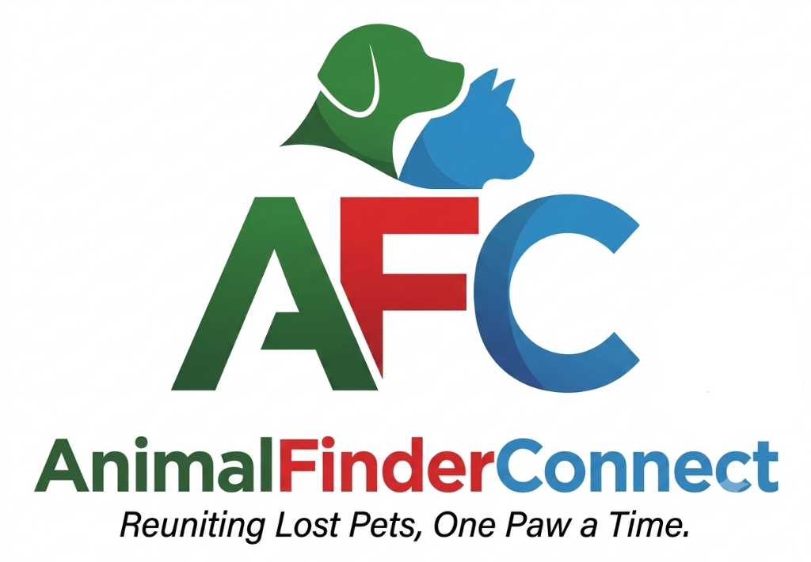

見つけた動物の情報を教えてください。飼い主の元へ帰るための大切な手がかりになります。
クリックして写真を撮影・アップロード
※写真からAIが特徴を自動抽出します（複数枚可）
虐待目的のなりすまし（引き取り詐欺）を防ぐため、本当の飼い主しか知らないような特徴を入力してください。 ※この項目は一般には公開されません。飼い主からの問い合わせがあった際の本人確認として利用します。
※地図上でピンを動かして正確な位置を指定できます。
※飼い主とマッチングした場合、匿名チャットで連絡ができます。本名やメールアドレスは相手に公開されません。
保護・目撃情報を受け付けました。AIが飼い主の捜索情報と照合します。